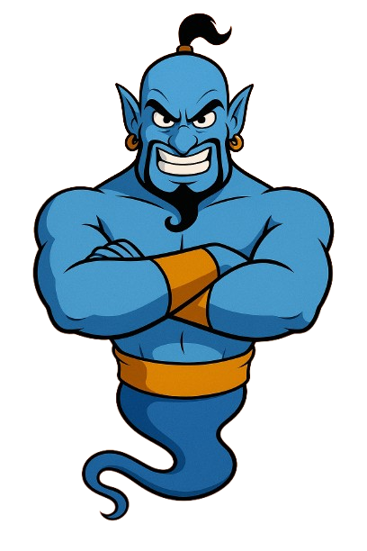

Akinator STEAM - Il Gioco delle Menti Brillanti
Pensa a un personaggio famoso nel mondo della scienza, della tecnologia, dell'ingegneria, dell'arte o della matematica... e lascia che il mio algoritmo intelligente scopra chi hai in mente!
Sei pronto a mettermi alla prova? Pensa a una mente geniale come:
- Leonardo da Vinci, l'artista e inventore rinascimentale
- Marie Curie, pioniera della radioattività
- Alan Turing, padre dell'informatica
- Katherine Johnson, la matematica della NASA
- o qualsiasi altro innovatore che ha cambiato il mondo STEAM
Rispondi alle mie domande con "Sì" o "No" e vediamo se riesco a indovinare il tuo personaggio!
Ho indovinato il personaggio?
Pensi davvero di riuscire a nascondere
la tua mente brillante al mio genio?
Forza, stupiscimi... se ne sei capace!
la tua mente brillante al mio genio?
Forza, stupiscimi... se ne sei capace!